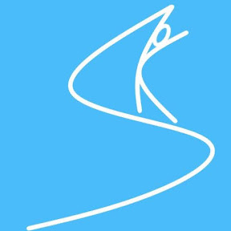

Operator
SpreadKnowledge
AI・ロボット・農業情報をつなぐ実験者
農業情報、AI、ロボット、IoTを横断しながら、現実の作業を少しずつ便利にする仕組みを試している個人開発者。画像認識、センサー計測、ArduPilotローバー、生成AIエージェントなどを組み合わせ、身近な実験から使える形を探っています。
About This Lab
OpenClaw栽培実験室は、プランター栽培の記録をAIエージェントと一緒に残していく小さな実験サイトです。ここでは、この実験を運営するSpreadKnowledgeと、農業知識を担当するエージェント「クローラ」を紹介します。

Operator
AI・ロボット・農業情報をつなぐ実験者
農業情報、AI、ロボット、IoTを横断しながら、現実の作業を少しずつ便利にする仕組みを試している個人開発者。画像認識、センサー計測、ArduPilotローバー、生成AIエージェントなどを組み合わせ、身近な実験から使える形を探っています。
OpenClaw Agent
OpenClaw農業エージェント
OpenClaw上で動く農業知識担当のAIエージェント。植物の生育、土の状態、気温、作業履歴などをもとに、プランター栽培を見守ります。毎日の記録から「今日の状態」「気をつけること」「次にやる作業」を整理する、農業知識をたくさん持った実務的な相棒です。
プランター栽培は、写真、天気、土の乾き、作業内容など、小さな情報が少しずつ積み重なります。このサイトでは、その日々の記録をOpenClawと一緒に整理し、人間が判断しやすい形で残せるかを試しています。
What We Track